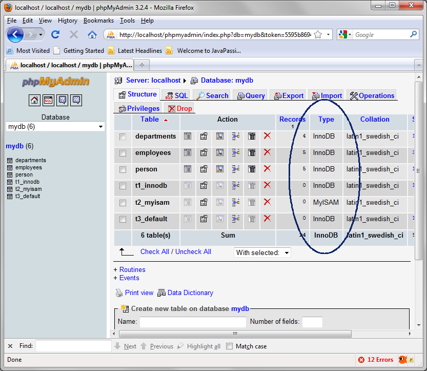

MySQL Basics II
MySQL provides comprehensive set of options for creating tables and
query operations. In this exercise, some of the more advanced yet
important SQL commands and their options will be explored.
Expected duration: 100 minutes
(excluding homework)
Software Needed
- 1611_mysql_basics2.zip (download)
- It contains this document and the lab contents
- Download it and unzip in a directory of your choice
OS platforms you can use
- Windows
- Solaris x86, Solaris Sparc
- Linux
- Mac OS X
Change Log
- March 15th, 2010: Created
Things to be done (by Sang Shin)
- Add more explanation to the exercises
Lab Exercises
Exercise 1: Advanced field modifiers
You can specify various
field modifiers.
- AUTO_INCREMENT on primary key constraint
- UNIQUE constraint
- INDEX constraint (when creating a table)
- INDEX constaint (to an existing table)
(1.1)
AUTO_INCREMENT on primary key
0. Study AUTO_INCREMENT
mysql> HELP AUTO_INCREMENT;
Name: 'AUTO_INCREMENT'
Description:
The AUTO_INCREMENT attribute can
be used to generate a unique identity
for new rows:
URL: http://dev.mysql.com/doc/refman/5.1/en/example-auto-increment.html
Examples:
CREATE TABLE students (
id MEDIUMINT NOT NULL AUTO_INCREMENT,
name CHAR(30) NOT NULL,
PRIMARY KEY (id)
);
INSERT INTO students (name) VALUES
('dog'),('cat'),('penguin'),
('lax'),('whale'),('ostrich');
SELECT * FROM students;
|
1. Study
auto_increment_on_primarykey.sql.
/* Create "employees" table */
DROP TABLE IF EXISTS employees;
CREATE TABLE employees (
employee_id
int(11) NOT NULL AUTO_INCREMENT,
name varchar(255) NOT NULL,
salary decimal(7,2) NOT NULL,
PRIMARY KEY (employee_id)
);
/* Data for the table employees - providing employee_id
explicitly */
INSERT INTO employees(employee_id, name, salary)
VALUES
(1,'jack','3000.00'),
(2,'mary','2500.00'),
(3,'nichole','4000.00');
/* Data for the table employees
- using AUTO_INCREMENT */
INSERT INTO employees(name,
salary)
VALUES
('angie','5000.00'),
('jones','5000.00');
/* Display records */
SELECT * FROM employees;
|
2. Execute
auto_increment_on_primarykey.sql.
mysql> SOURCE
/handson_mysql/mysql_basics2/sqlscripts/auto_increment_on_primarykey.sql
Query OK, 0 rows affected (0.06 sec)
Query OK, 0 rows affected (0.17 sec)
Query OK, 3 rows affected (0.04 sec)
Records: 3 Duplicates: 0 Warnings: 0
Query OK, 2 rows affected (0.06 sec)
Records: 2 Duplicates: 0 Warnings: 0
+-------------+---------+---------+
| employee_id | name | salary |
+-------------+---------+---------+
| 1 |
jack | 3000.00 |
| 2 |
mary | 2500.00 |
| 3 |
nichole | 4000.00 |
| 4 |
angie | 5000.00 |
| 5 |
jones | 5000.00 |
+-------------+---------+---------+
5 rows in set (0.00 sec)
|
return
to top of the exercise
(1.2)
UNIQUE constraint
1. Study
unique.sql
/* Create "employees" table */
DROP TABLE IF EXISTS employees;
CREATE TABLE employees (
employee_id int(11) NOT NULL AUTO_INCREMENT,
/* name field now has UNIQUE constraint */
name varchar(255)
NOT NULL UNIQUE,
salary decimal(7,2) NOT NULL,
PRIMARY KEY (employee_id)
);
/* Data for the table employees - using AUTO_INCREMENT */
INSERT INTO employees(name, salary)
VALUES
('angie','5500.00'),
('jones','5000.00'),
('jones','4000.00'); /*
This should result in an error */
/* Display records */
SELECT * FROM employees; |
2. Execute
unique.sql
mysql> SOURCE
/handson_mysql/mysql_basics2/sqlscripts/unique.sql
Query OK, 0 rows affected, 1 warning (0.00 sec)
Query OK, 0 rows affected (0.21 sec)
ERROR 1062 (23000):
Duplicate entry 'jones' for key 'name'
Empty set (0.00 sec) |
return
to top of the exercise
(1.3)
INDEX constraint (when creating a table)
An index is a
separate file that is sorted, and contains only the field/s you're
interested in sorting on.
1. Study
index.sql
/* Create "employees" table */
DROP TABLE IF EXISTS employees;
CREATE TABLE employees (
employee_id int(11) NOT NULL AUTO_INCREMENT,
name varchar(255) NOT NULL UNIQUE,
salary decimal(7,2) NOT NULL,
PRIMARY KEY (employee_id),
INDEX (name)
);
/* Data for the table employees */
INSERT INTO employees(name, salary)
VALUES
('angie','5500.00'),
('bobby','2500.00'),
('jones','5000.00');
/* Display records */
SELECT * FROM employees;
|
2. Execute
index.sql
mysql> SOURCE
/handson_mysql/mysql_basics2/sqlscripts/index.sql
Query OK, 0 rows affected (0.15 sec)
Query OK, 0 rows affected (0.10 sec)
Query OK, 3 rows affected (0.04 sec)
Records: 3 Duplicates: 0 Warnings: 0
+-------------+-------+---------+
| employee_id | name | salary |
+-------------+-------+---------+
| 1 | angie
| 5500.00 |
| 2 | bobby
| 2500.00 |
| 3 | jones
| 5000.00 |
+-------------+-------+---------+
3 rows in set (0.00 sec)
|
return
to top of the exercise
(1.4)
Adding INDEX constraint to an existing table
Indexing is the most important tool you
have for speeding up queries. Other
techniques are available to you, too, but generally the one thing that
makes the
most difference is the proper use of indexes.
Let's consider how an index works by beginning with a table that has no
indexes. An unindexed table is simply an unordered collection of rows.
For
example,
Figure
4.1 shows the a table that was discussed in Chapter 1,
"Getting Started with MySQL and SQL." There are no indexes on this
table, so to find the rows for a particular company, it's necessary to
examine each row in the table to see if it matches the desired value.
This
involves a full table scan, which is slow, as well as tremendously
inefficient
if the table is large but contains only a few records that match the
search
criteria.
0. Study CREATE INDEX.
mysql> HELP CREATE INDEX;
Name: 'CREATE INDEX'
Description:
Syntax:
CREATE [ONLINE|OFFLINE] [UNIQUE|FULLTEXT|SPATIAL] INDEX index_name
[index_type]
ON tbl_name (index_col_name,...)
[index_option] ...
index_col_name:
col_name [(length)] [ASC | DESC]
index_type:
USING {BTREE | HASH | RTREE}
index_option:
KEY_BLOCK_SIZE [=] value
| index_type
| WITH PARSER parser_name
CREATE INDEX is mapped to an ALTER TABLE statement to create indexes.
See [HELP ALTER TABLE]. CREATE INDEX cannot be used to create a PRIMARY
KEY; use ALTER TABLE instead. For more information about indexes, see
http://dev.mysql.com/doc/refman/5.1/en/mysql-indexes.html.
URL: http://dev.mysql.com/doc/refman/5.1/en/create-index.html
|
2. Perform CREATE INDEX
mysql> CREATE INDEX salary_index ON
employees(salary);
Query OK, 3 rows affected (0.32 sec)
Records: 3 Duplicates: 0 Warnings: 0
|
Exercise 2: Table modifiers - Storage
engine
You can create a table
using various options.
- Storge engine
(2.1)
Storage engines
0. Study SHOW ENGINES.
mysql> help SHOW ENGINES;
Name: 'SHOW ENGINES'
Description:
Syntax:
SHOW [STORAGE] ENGINES
SHOW ENGINES displays status information about the server's storage
engines. This is particularly useful for checking whether a storage
engine is supported, or to see what the default engine is. SHOW TABLE
TYPES is a deprecated synonym.
URL: http://dev.mysql.com/doc/refman/5.1/en/show-engines.html
|
2. Display storage engines of the server.
mysql> SHOW ENGINES\G
*************************** 1. row ***************************
Engine: MyISAM
Support: YES
Comment: Default engine as of MySQL 3.23 with
great performance
Transactions: NO
XA: NO
Savepoints: NO
*************************** 2. row ***************************
Engine: CSV
Support: YES
Comment: CSV storage engine
Transactions: NO
XA: NO
Savepoints: NO
*************************** 3. row ***************************
Engine: MRG_MYISAM
Support: YES
Comment: Collection of identical MyISAM tables
Transactions: NO
XA: NO
Savepoints: NO
*************************** 4. row ***************************
Engine: BLACKHOLE
Support: YES
Comment: /dev/null storage engine (anything
you write to it disappears)
Transactions: NO
XA: NO
Savepoints: NO
*************************** 5. row ***************************
Engine: FEDERATED
Support: NO
Comment: Federated MySQL storage engine
Transactions: NULL
XA: NULL
Savepoints: NULL
*************************** 6. row ***************************
Engine: InnoDB
Support: DEFAULT
Comment: Supports transactions, row-level
locking, and foreign keys
Transactions: YES
XA: YES
Savepoints: YES
*************************** 7. row ***************************
Engine: ARCHIVE
Support: YES
Comment: Archive storage engine
Transactions: NO
XA: NO
Savepoints: NO
*************************** 8. row ***************************
Engine: MEMORY
Support: YES
Comment: Hash based, stored in memory, useful
for temporary tables
Transactions: NO
XA: NO
Savepoints: NO
8 rows in set (0.00 sec)
|
3. Create tables specifying storage engine.
mysql> CREATE TABLE t1_InnoDB (id int)
-> ENGINE =
InnoDB;
Query OK, 0 rows affected (0.18 sec)
mysql> CREATE TABLE t2_MyISAM (id
int)
-> ENGINE =
MyISAM;
Query OK, 0 rows affected (0.07 sec)
// Create a table with a default storage engine
mysql> CREATE TABLE t3_default (id
int);
Query OK, 0 rows affected (0.13 sec)
mysql> SHOW TABLE STATUS\G
*************************** 1. row ***************************
Name:
t1_innodb
Engine: InnoDB
Version: 10
Row_format: Compact
Rows: 0
Avg_row_length: 0
Data_length: 16384
Max_data_length: 0
Index_length: 0
Data_free: 5242880
Auto_increment: NULL
Create_time: 2010-03-29 07:47:56
Update_time: NULL
Check_time: NULL
Collation: latin1_swedish_ci
Checksum: NULL
Create_options:
Comment:
*************************** 2. row ***************************
Name:
t2_myisam
Engine: MyISAM
Version: 10
Row_format: Fixed
Rows: 0
Avg_row_length: 0
Data_length: 0
Max_data_length: 1970324836974591
Index_length: 1024
Data_free: 0
Auto_increment: NULL
Create_time: 2010-03-29 07:48:51
Update_time: 2010-03-29 07:48:51
Check_time: NULL
Collation: latin1_swedish_ci
Checksum: NULL
Create_options:
Comment:
*************************** 3. row ***************************
Name:
t3_default
Engine: InnoDB
Version: 10
Row_format: Compact
Rows: 0
Avg_row_length: 0
Data_length: 16384
Max_data_length: 0
Index_length: 0
Data_free: 5242880
Auto_increment: NULL
Create_time: 2010-03-29 07:49:09
Update_time: NULL
Check_time: NULL
Collation: latin1_swedish_ci
Checksum: NULL
Create_options:
Comment:
3 rows in set (0.00 sec)
|
mysql> SELECT ENGINE
-> FROM information_schema.TABLES
-> WHERE TABLE_SCHEMA = 'mydb'
-> AND TABLE_NAME = 'person';
+--------+
| ENGINE |
+--------+
| InnoDB |
+--------+
1 row in set (0.07 sec) |

return
to top of the exercise
Exercise 3: WHERE clause options
SQL WHERE clause is
used with SQL SELECT statement to
specifies the search conditions of a query. When you execute a query
with SQL WHERE clause, the database
server
searches for records in the database table(s) which meets your search
conditions. SQL provides a variety of search conditions which you can
use with SQL WHERE clause.
- Using comparison operators
(=,>,<,.>=,<=,<>) in WHERE clause
- Using logical operations (AND, OR, NOT) in WHERE
clause
- Using BETWEEN
- Using IN
- Sorting through ORDER BY
- Using LIKE
- Using regular expression
- Eliminating dulicates through DISTINCT
- Limiting results with LIMIT
(3.1)
Using comparison operators (=,>,<,.>=,<=,<>) in WHERE
clause
/* Create "employees" table */
DROP TABLE IF EXISTS employees;
CREATE TABLE employees (
employee_id int(11) NOT NULL AUTO_INCREMENT,
name varchar(255) NOT NULL,
salary decimal(7,2) NOT NULL,
department_id int(11) NOT NULL,
PRIMARY KEY (employee_id)
) ENGINE=InnoDB;
/* Data for the table employees */
INSERT INTO employees(name, salary, department_id)
VALUES
('jack','3000.00', 1),
('mary','2500.00', 2),
('nichole','4000.00', 1),
('angie','5000.00', 2),
('jones','5000.00', 3);
/* Use comparison operators */
SELECT * FROM employees
WHERE salary > 3500;
|
mysql> SOURCE
/handson_mysql/mysql_basics2/sqlscripts/comparison_operators.sql
Query OK, 0 rows affected (0.04 sec)
Query OK, 0 rows affected (0.11 sec)
Query OK, 5 rows affected (0.03 sec)
Records: 5 Duplicates: 0 Warnings: 0
+-------------+---------+---------+---------------+
| employee_id | name | salary | department_id |
+-------------+---------+---------+---------------+
| 3 |
nichole | 4000.00
|
1 |
| 4 |
angie | 5000.00
|
2 |
| 5 |
jones | 5000.00
|
3 |
+-------------+---------+---------+---------------+
3 rows in set (0.00 sec)
|
return
to top of the exercise
(3.2)
Using logical operations (AND, OR, NOT) in WHERE clause
/* Use logical operators */
SELECT * FROM employees
WHERE salary > 3500 AND department_id >= 2;
SELECT * FROM employees
WHERE (department_id = 1 AND NOT name
= 'nichole')
OR salary > 4500;
|
mysql> SOURCE
/handson_mysql/mysql_basics2/sqlscripts/logical_operators.sql
+-------------+-------+---------+---------------+
| employee_id | name | salary | department_id |
+-------------+-------+---------+---------------+
| 4 | angie
| 5000.00
|
2 |
| 5 | jones
| 5000.00
|
3 |
+-------------+-------+---------+---------------+
2 rows in set (0.00 sec)
+-------------+-------+---------+---------------+
| employee_id | name | salary | department_id |
+-------------+-------+---------+---------------+
| 1 |
jack | 3000.00
|
1 |
| 4 | angie
| 5000.00
|
2 |
| 5 | jones
| 5000.00
|
3 |
+-------------+-------+---------+---------------+
3 rows in set (0.00 sec)
|
return
to top of the exercise
(3.3)
Using BETWEEN
/* Use BETWEEN */
SELECT * FROM employees
WHERE salary BETWEEN 2000 AND 4000;
|
mysql> SOURCE
/handson_mysql/mysql_basics2/sqlscripts/between.sql
+-------------+---------+---------+---------------+
| employee_id | name | salary | department_id |
+-------------+---------+---------+---------------+
| 1 |
jack | 3000.00
|
1 |
| 2 |
mary | 2500.00
|
2 |
| 3 |
nichole | 4000.00
|
1 |
+-------------+---------+---------+---------------+
3 rows in set (0.00 sec)
|
return
to top of the exercise
(3.4)
Using IN
/* Use IN */
SELECT * FROM employees
WHERE name IN ('nichole', 'jack');
|
mysql> SOURCE
/handson_mysql/mysql_basics2/sqlscripts/in.sql
+-------------+---------+---------+---------------+
| employee_id | name | salary | department_id |
+-------------+---------+---------+---------------+
| 1 |
jack | 3000.00
|
1 |
| 3 |
nichole | 4000.00
|
1 |
+-------------+---------+---------+---------------+
2 rows in set (0.00 sec) |
return
to top of the exercise
(3.5)
Sorting through ORDER BY
/* Use ORDER BY ascending */
SELECT * FROM employees
WHERE salary BETWEEN 2000 AND 4000
ORDER BY name ASC;
/* Use ORDER BY descending */
SELECT * FROM employees
WHERE salary BETWEEN 2000 AND 4000
ORDER BY name DESC;
|
mysql> SOURCE
/handson_mysql/mysql_basics2/sqlscripts/orderby.sql
+-------------+---------+---------+---------------+
| employee_id | name | salary | department_id |
+-------------+---------+---------+---------------+
| 1 |
jack | 3000.00
|
1 |
| 2 |
mary | 2500.00
|
2 |
| 3 |
nichole | 4000.00
|
1 |
+-------------+---------+---------+---------------+
3 rows in set (0.00 sec)
+-------------+---------+---------+---------------+
| employee_id | name | salary | department_id |
+-------------+---------+---------+---------------+
| 3 |
nichole | 4000.00
|
1 |
| 2 |
mary | 2500.00
|
2 |
| 1 |
jack | 3000.00
|
1 |
+-------------+---------+---------+---------------+
3 rows in set (0.00 sec)
|
return
to top of the exercise
(3.6)
Using LIKE
/* Use LIKE */
SELECT * FROM employees
WHERE name LIKE '%n%';
SELECT * FROM employees
WHERE name LIKE '%e';
|
mysql> SOURCE
/handson_mysql/mysql_basics2/sqlscripts/like.sql
+-------------+---------+---------+---------------+
| employee_id | name | salary | department_id |
+-------------+---------+---------+---------------+
| 3 |
nichole | 4000.00
|
1 |
| 4 |
angie | 5000.00
|
2 |
| 5 |
jones | 5000.00
|
3 |
+-------------+---------+---------+---------------+
3 rows in set (0.00 sec)
+-------------+---------+---------+---------------+
| employee_id | name | salary | department_id |
+-------------+---------+---------+---------------+
| 3 |
nichole | 4000.00
|
1 |
| 4 |
angie | 5000.00
|
2 |
+-------------+---------+---------+---------------+
2 rows in set (0.00 sec)
|
return
to top of the exercise
(3.7)
Using regular expression
/* Use Regular Expression */
/* Get all records whose name is either 'jones' or 'mary' */
SELECT * FROM employees
WHERE name REGEXP 'jones|mary';
/* Get all records whose name starts with 'j' */
SELECT * FROM employees
WHERE name REGEXP '^j';
/* Get all records whose name ends with 'e' */
SELECT * FROM employees
WHERE name REGEXP 'e$';
|
mysql> SOURCE
/handson_mysql/mysql_basics2/sqlscripts/regexp.sql;
+-------------+-------+---------+---------------+
| employee_id | name | salary | department_id |
+-------------+-------+---------+---------------+
| 2 |
mary | 2500.00
|
2 |
| 5 | jones
| 5000.00
|
3 |
+-------------+-------+---------+---------------+
2 rows in set (0.00 sec)
+-------------+-------+---------+---------------+
| employee_id | name | salary | department_id |
+-------------+-------+---------+---------------+
| 1 |
jack | 3000.00
|
1 |
| 5 | jones
| 5000.00
|
3 |
+-------------+-------+---------+---------------+
2 rows in set (0.00 sec)
+-------------+---------+---------+---------------+
| employee_id | name | salary | department_id |
+-------------+---------+---------+---------------+
| 3 |
nichole | 4000.00
|
1 |
| 4 |
angie | 5000.00
|
2 |
+-------------+---------+---------+---------------+
2 rows in set (0.00 sec)
|
return
to top of the exercise
(3.8)
Eliminating dulicates using DISTINCT
/* Use DISTINCT */
SELECT DISTINCT salary FROM employees;
|
mysql> SOURCE
/handson_mysql/mysql_basics2/sqlscripts/distinct.sql
+---------+
| salary |
+---------+
| 3000.00 |
| 2500.00 |
| 4000.00 |
| 5000.00 |
+---------+
4 rows in set (0.00 sec)
|
(3.9)
Limiting results with LIMIT
/* Use LIMIT */
SELECT * FROM employees
LIMIT 3;
|
mysql> SOURCE
/handson_mysql/mysql_basics2/sqlscripts/limit.sql;
+-------------+---------+---------+---------------+
| employee_id | name | salary | department_id |
+-------------+---------+---------+---------------+
| 1 |
jack | 3000.00
|
1 |
| 2 |
mary | 2500.00
|
2 |
| 3 |
nichole | 4000.00
|
1 |
+-------------+---------+---------+---------------+
3 rows in set (0.00 sec)
|
Exercise 4: GROUP BY and HAVING
GROUP BY
as its name
imply, returns group of rows. SQL GROUP BY clause divides a
table into sets and it usually use with SQL aggregate functions which
produces summary value for each set.
SQL HAVING clause is a SQL
WHERE clause for groups. Just as SQL WHERE clause limits rows, SQL
HAVING clause limits groups. In most programming contexts, you
will use SQL HAVING clause after SQL GROUP BY clause to
limits groups by searched conditions.
- GROUP BY
- HAVING
(4.1)
GROUP BY
/* Create "employees" table */
DROP TABLE IF EXISTS employees;
CREATE TABLE employees (
employee_id int(11) NOT NULL AUTO_INCREMENT,
name varchar(255) NOT NULL,
salary decimal(7,2) NOT NULL,
department_id int(11) NOT NULL,
PRIMARY KEY (employee_id)
) ENGINE=InnoDB;
/* Data for the table employees */
INSERT INTO employees(name, salary, department_id)
VALUES
('jack','3000.00', 1),
('mary','2500.00', 2),
('nichole','4000.00', 1),
('angie','5000.00', 2),
('jones','5000.00', 3);
/* Get number of employees for
each department using GROUP BY */
SELECT department_id, COUNT(employee_id) AS employee_count
FROM employees
GROUP BY department_id;
|
mysql> SOURCE
/handson_mysql/mysql_basics2/sqlscripts/group_by.sql
Query OK, 0 rows affected, 1 warning (0.00 sec)
Query OK, 0 rows affected (0.12 sec)
Query OK, 5 rows affected (0.04 sec)
Records: 5 Duplicates: 0 Warnings: 0
+-------------------+----------------- ----+
| department_id | employee_count |
+-----------==----+-----===-----------+
|
1
|
2 |
|
2
|
2 |
|
3
|
1 |
+-------------------+----------------------+
3 rows in set (0.08 sec)
|
(4.2)
HAVING
/* Create "employees" table */
DROP TABLE IF EXISTS employees;
CREATE TABLE employees (
employee_id int(11) NOT NULL AUTO_INCREMENT,
name varchar(255) NOT NULL,
salary decimal(7,2) NOT NULL,
department_id int(11) NOT NULL,
PRIMARY KEY (employee_id)
) ENGINE=InnoDB;
/* Data for the table employees */
INSERT INTO employees(name, salary, department_id)
VALUES
('jack','3000.00', 1),
('mary','2500.00', 2),
('nichole','4000.00', 1),
('angie','5000.00', 2),
('jones','5000.00', 3);
/* Get number of employees for each department using GROUP BY &
* the number of employees are greater than or equal to 2.
*/
SELECT department_id, COUNT(employee_id) AS employee_count
FROM employees
GROUP BY department_id
HAVING employee_count >= 2;
|
mysql> SOURCE
/handson_mysql/mysql_basics2/sqlscripts/having.sql
Query OK, 0 rows affected (0.05 sec)
Query OK, 0 rows affected (0.09 sec)
Query OK, 5 rows affected (0.03 sec)
Records: 5 Duplicates: 0 Warnings: 0
+-------------------+----------------------+
| department_id | employee_count |
+-------------------+----------------------+
|
1
|
2 |
|
2
|
2 |
+-------------------+----------------------+
2 rows in set (0.00 sec)
|
return
to top of the exercise
Exercise 5: User-defined variables
You can store a value in a user-defined
variable in one statement and then refer to it later in another
statement. This enables you to pass values from one statement to
another. User-defined variables are
connection-specific. That is, a user variable defined by
one client cannot be seen or used by other clients. All variables for a
given client connection are automatically freed when that client exits.
User variables are written as
@var_name,
where the variable name
var_name
consists of alphanumeric characters from the current character set. A
user variable
name can contain other characters if you quote it as a string or
identifier (for example,
@'my-var',
@"my-var", or
@`my-var`).
One way to set a user-defined variable is by issuing a SET
statement:
SET @var_name = expr [, @var_name = expr] ...
For SET,
either = or :=
can be used as the assignment operator. You can also assign a
value to a user variable in statements other than SET.
In
this case, the assignment operator must be :=
and not = because =
is treated as a comparison operator in non-SET
statements:
- Setting a user-defined variable with
SET
- Setting a user-defined variable with SELECT..
INTO statement
(5.1)
Setting a user-defined variable with SET
mysql> SET @my_var1 = 10, @my_var2 := 20;
Query OK, 0 rows affected (0.24 sec)
mysql> SELECT @my_var1, @my_var2,
@my_var3 := @my_var1 + @my_var2;
+----------+----------+---------------------------------+
| @my_var1 | @my_var2 | @my_var3 := @my_var1 + @my_var2 |
+----------+----------+---------------------------------+
| 10
| 20
|
30 |
+----------+----------+---------------------------------+
1 row in set (0.05 sec)
mysql> SET @my_string_var = 'Sang
Shin';
Query OK, 0 rows affected (0.00 sec)
mysql> SELECT
UPPER(@my_string_var), LOWER(@my_string_var);
+-----------------------+-----------------------+
| UPPER(@my_string_var) | LOWER(@my_string_var) |
+-----------------------+-----------------------+
| SANG
SHIN
| sang
shin
|
+-----------------------+-----------------------+
1 row in set (0.08 sec)
|
return
to top of the exercise
(5.2)
Setting a user-defined variable with SELECT .. INTO statement
mysql> SELECT 67 INTO
@my_var4;
Query OK, 1 row affected (0.06 sec)
mysql> SELECT @my_var4;
+----------+
| @my_var4 |
+----------+
| 67 |
+----------+
1 row in set (0.00 sec)
mysql> SELECT @my_var4 + 10 INTO
@my_var5;
Query OK, 1 row affected (0.00 sec)
mysql> SELECT @my_var4, @my_var5;
+----------+----------+
| @my_var4 | @my_var5 |
+----------+----------+
| 67
| 77 |
+----------+----------+
1 row in set (0.00 sec)
|
return
to top of the exercise
Homework
Exercise (for people
who
are taking Sang Shin's "MySQL online course")
1.
The homework is to create a SQL file called, mysql_basics2.sql, which
performs the following SQL tasks, when run.
- Create a new database called, myowndb.
- Create a new table called, myown_students, which has the
following fields. The table should be created with InnoDB storage
engine.
- student_id SMALLINT as a primary key field with AUTO_INCREMENT
- name VARCHAR(40)
- school VARCHAR(40)
- age INT
- The name field has to be unique
- The school field has to be indexed
- Add 7 records (rows) of sample data to the table. The primary key
should be provided using AUTO_INCREMENT.
- Define user-define variables average_age, min_age, max_age and
compute them from the records and display them
- Compute and display number of students for each school using
GROUP BY and HAVING
2
. Send the following files to mysql_homeworks@javapassion.com
with Subject
as mysql_basics2.
- mysql_basics2.sql file.
- Captured output screen -
name it as mysql_basics2.gif
or mysql_basics2.jpg (or mysql_basics2.<whatver
graphics format>)
- Any screen capture that shows that your program is working is
good enough.

{kind=link}